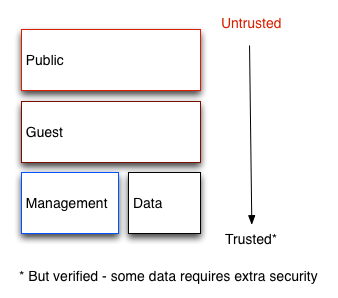
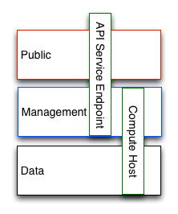
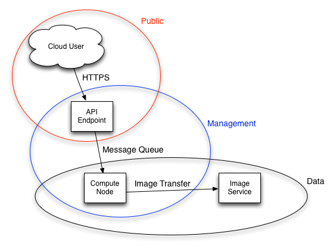
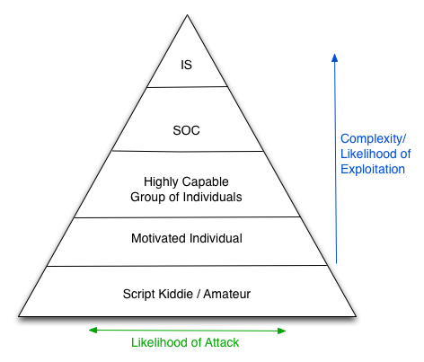
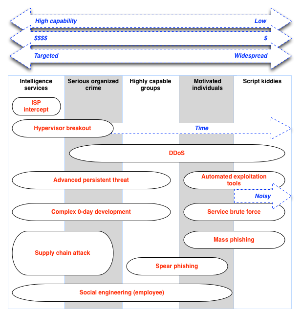

クラウドとは、セキュリティドメインと呼ばれる、機能やユーザー、共有セキュリティの関心事に基づいた論理コンポーネントの集まりであると要約できます。脅威に関するアクターやベクトルは、リソースへのアクセスや動機をベースに分類されます。OpenStack の目標は、リスクや脆弱性保護の目的にあわせてドメインごとにセキュリティの関心事についての判断材料を提供することです。
セキュリティドメインは、システム内の信頼性に関する共通の要件や期待を共有するユーザー、アプリケーション、サーバー、ネットワークのいずれかで構成されています。通常、これらのドメインには、同じ認証と承認 (AuthN/Z) 要件およびユーザーが指定されています。
これらのドメインをさらに分類する場合もありますが (該当箇所で説明)、一般的に OpenStack クラウドをセキュアにデプロイしていく上で最低限必要な部分を構成する、4 つの異なるセキュリティドメインのことを指します。以下に、これらのセキュリティドメインを示しています。
パブリック
ゲスト
管理
データ
上記のセキュリティドメインを選択したのは、個別にマッピング可能であること、または組み合わせると指定の OpenStack デプロイメントで存在する可能性のある信頼エリアの大部分を表すことができるためです。例えば、デプロイメントトポロジによっては、物理ネットワーク 1 つ vs 他のネットワークとなるように、ゲストとデータドメインの両方を組みわせて、ネットワークを物理的に分割するものもあります。いずれの場合も、クラウドオペレーターは、適切なセキュリティの関心事を認識する必要があります。これらのドメインや信頼性に関する要件は、クラウドインスタンスがパブリック、プライベート、ハイブリッドのいずれであるかによって変わってきます。

パブリックのセキュリティドメインとは、クラウドインフラストラクチャーの中で完全に Untrusted なエリアのことです。インターネット全体を指す場合や、単に権限を持たないネットワークを指す場合があります。機密性や完全性の要件を持つデータがこのドメインを通過する場合には、補完の制御を使用してこのデータを保護する必要があります。
このドメインは常に、 untrusted であると考えなければなりません。
ゲストのセキュリティドメインは、compute instance-to-instance トラフィックに通常使用されますが、API の呼び出しなどクラウドのオペレーションをサポートするサービスではなく、クラウド上のインスタンスが生成する compute データを処理します。
インスタンスの使用に関する厳密な制御がない、または制限なしに仮想マシンへインターネットアクセスが可能なパブリッククラウドのプロバイダーやプライベートクラウドのプロバイダーは、このドメインを untrusted であると見なすべきです。プライベートクライドプロバイダーは、インスタンスおよびすべてのテナントを確実に信頼できるように制御が設定されている場合のみ、このネットワークを内部、つまり trusted であると考えるようにしてください。
管理セキュリティドメインは、サービスがやりとりをする場所です。このドメインは時に「制御プレーン」と呼ばれることもあり、このドメイン内のネットワークは設定パラメーター、ユーザー名、パスワードなどの機密データをトランスポートします。コマンドや制御トラフィックは通常このドメインに常駐し、完全性に関する強力な要件が必要となります。このドメインへのアクセスについては非常に制限されたものでなくてはならず、さらに監視も必要です。また、このセキュリティドメインでは、本ガイドで記載されているセキュリティのベストプラクティスすべてを採用するようにしてください。
多くのデプロイメントでは、この管理セキュリティドメインは trusted と考えられています。しかし、OpenStack のデプロイメントの場合、このドメインと他のものをブリッジするシステムが多数あるため、このドメインの信頼レベルは下がります。詳細は、「セキュリティドメインのブリッジ」を参照してください。
ブリッジとは、複数のセキュリティドメイン内に存在するコンポーネントです。異なる信頼レベルまたは認証要件が指定されたセキュリテイドメイン間をブリッジするコンポーネントは、慎重に設定する必要があります。ネットワークアーキテクチャーの中で、これらのブリッジは弱点となることが多くなっています。常に、ブリッジするドメインの中で最も高い信頼レベルのセキュリティ要件を満たすように、ブリッジを設定するようにしてください。多くの場合、攻撃の可能性の高さから、主にブリッジのセキュリティ制御について考慮する必要があります。

上記の図は、データドメインと管理ドメインをブリッジする compute ノードです。このように、compute ノードは管理ドメインのセキュリティ要件に見合うように設定する必要があります。同様に、この図の API エンドポイントは untrusted であるパブリックドメインと管理ドメインをブリッジしており、パブリックドメインから管理ドメインに伝搬しないように攻撃から保護されるように設定する必要があります。

デプロイ担当者は、ブリッジするどのドメインよりも高い基準でブリッジのセキュリティを確保するように考えるようにしてください。API エンドポイントの上記の例では、攻撃者はパブリックドメインから API エンドポイントをターゲットにして、情報漏洩や管理ドメインへアクセス権の獲得を期待しつつこのエンドポイントを利用するのです。
OpenStack のデザインではセキュリティドメインの分離が困難です。コアサービスは通常少なくとも 2 つのドメインをブリッジしているため、ドメインのセキュリティ制御を適用する場合、細心の注意を払う必要があります。
クラウドデプロイメントの種類の多く (パブリックまたはプライベート) は、なんらかの攻撃にさらされています。本章では、攻撃者を分類して、各セキュリティドメインで考えられる攻撃の種類をまとめていきます。
脅威のアクターとは、防御の対象となりえる攻撃者のクラスを抽象的に表したものです。アクターの技術が高くなるにつれ、攻撃の軽減や防止を成功させるために必要なセキュリティ制御にかかるコストが嵩みます。セキュリティはコスト、使いやすさ、防御の間でのトレードオフということになります。ここで記載した脅威のアクターすべてから、クラウドのデプロイメントを保護することはできません。OpenStack クラウドをデプロイする方は、デプロイメントと用途の間でバランスが確保できるポイントを決定する必要が出てきます。
インテリジェンスサービス — このガイドでは最も有能な攻撃者とされています。インテリジェンスサービスやその他の国家主体は、ターゲットに圧力をかけるために莫大なリソースを費やすことができます。他のどのアクターよりも能力があります。人、技術両方の面で非常に厳しい制御がないと、これらのアクターから防御することは極めて困難です。
重大組織犯罪 — 極めて有能で金銭で動く攻撃者グループ。エクスポロイト開発やターゲットのリサーチに対する資金を組織内で調達できます。最近、ロシアンビジネスネットワーク (RBN) などの組織が登場し、大規模なサイバー犯罪企業がサイバー攻撃がどのようにして商品として成り立ったかを証明しました。産業スパイ活動は、SOC グループに分類されます。
非常に有能な組織 — これは通常ビジネスから資金を調達しているのではありませんが、サービスプロバイダーやクラウドオペレーターに対して重大な脅威をもたらす可能性のある「ハクティビスト」タイプの組織のことを指します。
動機のある個人 — 一人で行動するこれらの攻撃者は、詐欺師または悪意のある従業員、不満を持った顧客、小規模の産業スパイなど多くのものに扮して攻撃します。
スクリプトキディ — 自動化された脆弱性のスキャンやエクスプロイト。非標的型の攻撃。単なるいたずらの場合が多く、上記のアクターのいずれかによる情報漏洩により組織の評判に大きなリスクを与えます。

通常プライベートクラウドは企業や組織により、内部のネットワークやファイアウォールの内側にデプロイされます。企業は、社内のネットワークから出すことのできるデータが何であるか、厳密な方針が設定されており、特定の目的ごとに別のクラウドを設定する場合さえもあります。プライベートクラウドのユーザーは通常、クラウドを所有して各自の行動に責任を課される組織内の従業員です。このような従業員は、クラウドにアクセスする前にトレーニングセッションに出席することもしばしばあり、定期的に予定されるセキュリティ認識トレーニングに参加する場合も多くあります。反対に、パブリッククラウドはユーザー、クラウドのユースケース、ユーザーの動機を断定することができません。このように、すぐにゲストのセキュリティドメインは、パブリッククラウドプロバイダーにとっては完全に untrusted な状態となります。
パブリッククラウドの攻撃対象領域での顕著な相違点は、サービスに対してインターネットアクセスを提供しなければならない点です。API エンドポイントやダッシュボードなど、インスタンスの接続性、インターネット経由でのファイルアクセス、クラウド制御のファブリックとの対話機能は、パブリッククラウドで必須アイテムなのです。
プライバシーの課題は、パブリッククラウドのユーザーとプライベートクラウドのユーザーとでは全く正反対になっています。プライベートクラウドで生成・格納されているデータは通常、データ損失防止 (DLP)、ファイルの検査、ディープパケットインスペクション (DPI)、規範ファイアウォール (Prescriptive Firewall) などの技術をデプロイ可能なクラウドのオペレーターが所有します。反対に、パブリッククラウドには上記の様な制御の多くが存在しないため、プライバシーは、パブリッククラウドを採用する際の主な障害の 1 つとなっています。
クラウドデプロイメントからアウトバウンド方向で起こりえる不正使用に対して、十分な配慮が必要です。パブリックでも、プライベートでも、クラウドは多くのリソースが使用出来る状態になっている傾向にあります。ハッキングや与えられているアクセス権限 (悪意のある従業員) のいずれかによりクラウド内に攻撃ポイントを設定した攻撃者は、これらのリソースにインターネット全体の負荷をかけることができます。コンピュートサービスがあるクラウドは、理想的な DDoS や総当り攻撃エンジンを作り出します。パブリッククラウドのユーザーは多くの場合、責任を負う必要がなく、自由に使用できるインスタンスをすぐにアウトバウンドの攻撃として作り出すことができるため、パブリッククラウドにとっては、この点はより差し迫った課題でしょう。悪意のあるソフトウェアをホストしたり、他のネットワークへ攻撃していたりしたことが判明すると、企業の評判に大きな打撃を与えることでしょう。防止の方法には、egress セキュリティグループ、アウトバウンドトラフィックの検査、顧客の教育・認識、詐欺や悪用軽減戦略などがあります。
以下の図は、前項で説明したアクターから出される可能性のある攻撃の種類を記載しています。このような図では常に例外が存在しますが、アクター毎に典型的であると考えられる攻撃の種類を一般論として記述しています。

攻撃の形式ごとの規範的な防御については、本書の対象範囲外となっています。上記の図は、対策を行うべき脅威の種類、脅威のアクターについて詳細な情報を得た状態で意思決定ができるように支援します。商業的なパブリッククラウドのデプロイに関しては重大な犯罪の防止などが含まれる場合があります。 政府で使用するプライベートクラウドをデプロイする方は、細心の注意を払って設置された対策施設やサプライチェーンなど、より厳密な保護メカニズムを設置する必要があります。反対に、基本的なデプロイメントやテスト環境を設定する方は、制御に関する制約が少なくて済むでしょう。